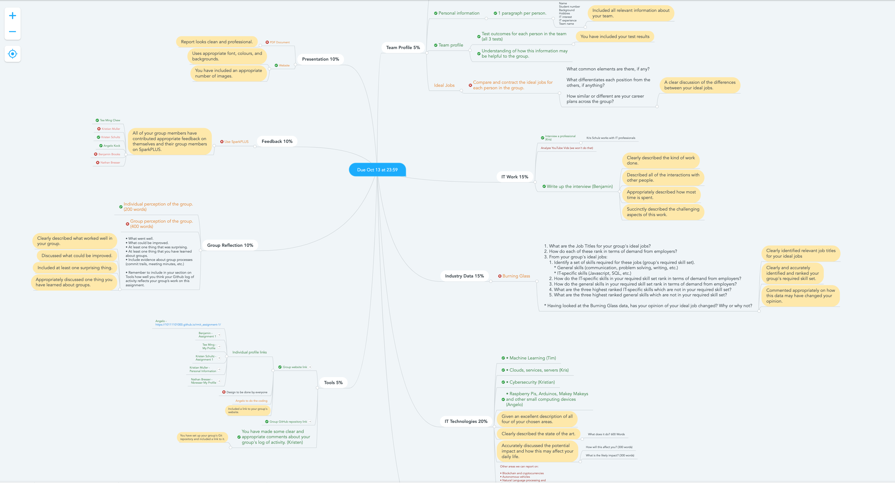

Website: https://krisschultz.github.io/AGIT---Agriculture-Information-Technology/
Repository: https://github.com/krisschultz/AGIT---Agriculture-Information-Technology
The audit trail in GitHub is not in any way an accurate reflection of the group's efforts and contributions as the majority of the work has been done within Microsoft Teams.
Within Teams we have used Microsoft Word to write up the assignment report and all team members have contributed. Additionally, we have used a mind map within Teams to layout and delegate the overall workload of the assignment. Refer to the below screenshot as evidence.
The group work on the project has a great experience, the team has worked together well and communication between the group members has been good. The group initially came together on canvas but quickly moved to an easier to use communication platform in WhatsApp. From here a Microsoft teams' team was put together and this has been invaluable in organising the team and setting out what tasks need to be complete. Meeting can be facilitated through teams as well as providing a platform for the project documents to be worked on collaboratively. This was a major boon for the group as it allowed us to focus on the work rather than or trying to organise the work. The group was not great at meeting out own deadlines which most likely has more to do with our being over optimistic about having enough time to work on the project. Many of the team member have heavy commitments outside of study so it's important going forward we are realistic about how much time we have to complete work during the week. I was surprised by how collaborative the team was in general and how members were very keen to take on work. I take away for me was to always make sure I am doing my best to update the rest of the team on how I’m tracking with work and if I need to help from the team. We did not use the GitHub log to track our activity.
Our group meetings have been conducted very smoothly because of the functionalities of Microsoft Teams which allowed us to have group voice calls and add our planned meetings to the calendar on our mobile devices. Additionally, we were able to collate all the required information and task delegations together in a single avenue which made understanding our workflow much easier. A few areas could see further improvement, such as planning our assignment earlier. Gathering all of our group members to meet has been challenging because of each person’s personal commitments colliding with the scheduled timeline of our assignment work. It was surprising that despite these inconveniences, the group was still able to get a majority of the work done close to the deadline although we had a rough start. I have learned that although the group was unable to meet internal deadlines on a timely manner, each person is still able to complete their work on time for the final deadline. The GitHub log of activity does not accurately reflect the group's work on the assignment because many of us are still contributing in different ways, although we are not skilled in designing websites and therefore have not made many commits.
The team has used a number of tools such as WhatsApp for communication and organising meetings whilst away from the pc. Microsoft Teams has been invaluable as this has been our team’s main communication and collaboration hub. I believe our team has worked well overall and communication has been very good amongst the majority of the team. It has been a challenge in getting everybody together at the same time due to work / life commitments along with having some of the work completed. There is room for improvement as far as time management goes for part of the group. I have found it surprising how well the group as a whole has come together and equally divided the workload and the level of commitment that has been shown and applied towards the project is great. I have learnt that even though some people have had a late start to the project that the contributions that have been put in since joining have been valuable. The groups GitHub log of activity does not reflect in any way individual contributions to the assignment as the work has been split up into many different segments and collaborated on within Microsoft Teams. Overall, I am happy to be working with all of our group members as everyone has something a little different to offer which will be the overall success of the team.
Group meetings have been very productive and gone smoothly, I believe this is due to the use of Microsoft teams for established meeting and WhatsApp for troubleshooting messages as we can all access this app going about our daily lives. Delegating tasks to one another was also a very easy process as everyone was open to what role they were going to take for the team. It was also easy to see who was doing what due to the creation of a mind map on Microsoft teams by other team members. I believe we could improve on our communication as at times it has been unclear who will be attending team meetings and if team members are going to have work done by the time they said it will be done. I believe this can be fixed by establishing group meetings at a regular time weekly instead of changing it week to week. I have surprisingly found Microsoft teams very easy to navigate and a very valuable asset to the group and will use it again in the future. I have learnt that having some flexibility with team members is very important as somethings are out of members control and everyone in the group lives a different life with different commitments. The groups GitHub activity log doesn’t reflect the groups work as we have been communicating and sharing all of our work through Microsoft teams.
The team has communicated via WhatsApp and Microsoft Teams, and initially on the Canvas discussion board. WhatsApp allowed us to stay in touch while not having access to the PC, Microsoft Teams allowed us to do most of the heavy lifting, in terms of collating different sections of the assignment, providing links to important documents and accessing the mind map and finally the discussion board/email allowed us to make original contact with one another. For me, I thought the team was able to discuss the assignment at high level and make sense of the requirements in the initial meeting and then worked well to delegate tasks. For me again, I could have been more proactive earlier in the piece, however work commitments made that difficult. One thing that surprised me was how effective and convenient Microsoft Teams has been to use. It allowed multiple people to access/edit the same documents and became the hub for all our activity. One thing I have learned about groups is that people from all backgrounds and experience can work together effectively. GitHub’s log of activity doesn’t reflect in any way the individual contributions to the assignment – The mind map that we used is probably a better reflection of individual contributions. In summary, I have enjoyed working with the team and as a person with minimal IT experience I have appreciated the team explaining and assisting with some of the organisation and complex aspects of the assignment.
The overall collaboration & communication within our team was very satisfying with some things to improve in future. Microsoft Team has been a great tool to gather data, allocate tasks, hold meetings and overall keep track of the progress. All members of the group used Teams instantly and with only minor problems. WhatsApp, as a commonly used communication platform already, was used to reduce get some information of some team members instantly, when needed. GitHub was only used for the website part of the project and the log only reflects the actual work done on the site. With Microsoft Teams, we also used Microsoft Word to gather all parts of the project in one document. I think that there is room for improvement. Firstly, to make everything more uniform, the format of similar parts of the assessment, for instance all reports on technologies, should be given by some sort of a template. Secondly, the data should be gathered in various documents to not to lose overview. Another thing to be improved is the timeline of the project. Deadlines must be set more realistically and then actually be met as well. Surprising was that even though a lot of the deadlines weren’t met, we were able to finish the project in time.